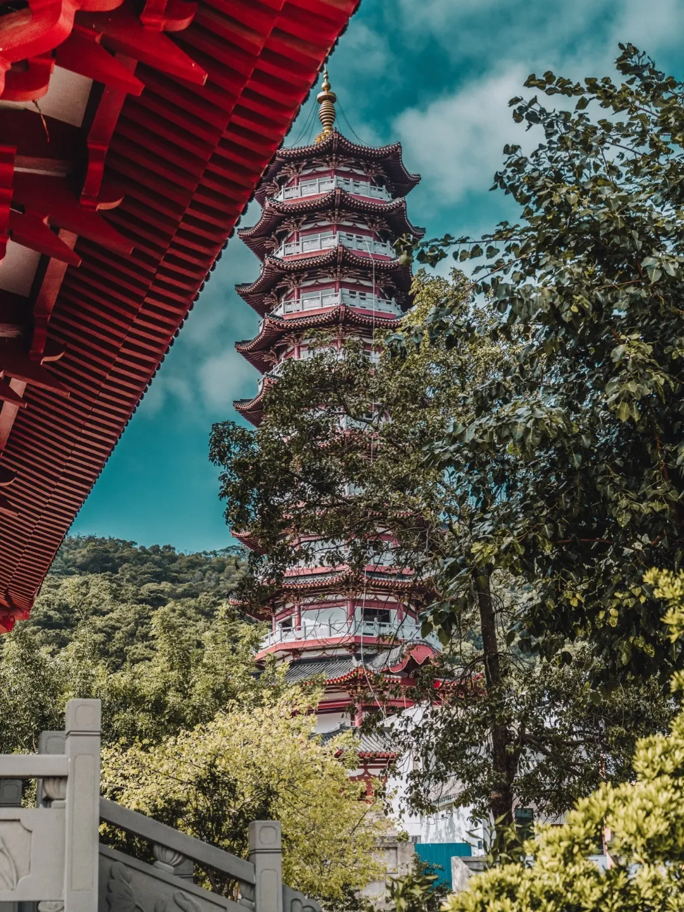

ABSTRACT
Beihai City is a prefecture-level city under the jurisdiction of the Guangxi Zhuang Autonomous Region of the People's Republic of China. It is located in the south of Guangxi, along the coast of the Beibu Gulf. The Nanliu River flows into the sea from north to southwest. The city is adjacent to Yulin City and Zhanjiang City of Guangdong Province in the east, Qinzhou City in the north, and Beibu Gulf in the west and south. The city has a total area of 3,337 square kilometers and a population of 1.8532 million. The Municipal People's Government is located in Haicheng District. Beihai is an open coastal city and a national famous historical and cultural city.
Beihai is an important port of departure of the ancient "Maritime Silk Road", one of the earliest foreign trade ports in my country, and historically one of the main commodity distribution centers for Yunnan, Guizhou, Sichuan, Guangxi, Hunan, Hubei and other provinces and overseas trade. Beihai is the only coastal city in the western part of China that has been included in the first batch of 14 further opening-up coastal cities in the country. It is also the only city in western China that has a deep-water seaport, an all-weather airport, high-speed railways and expressways.
This is a romantic city. The silver beach with sand as soft as a carpet is paved as a corridor leading directly to the sea. The wind blows the setting sun on Weizhou Island with misty cooking smoke. The ancient and vicissitudes of Hepu. Under the blue sky with white clouds, beside the open sea, on the sandy beach covered with pearls and shells, the fisher girl who weaves a net in front of the house looms under the cover of the plantain grove... This is BeiHai, a gorgeous paradise on the southwestern coast.
HISTORY
In ancient times, Beihai belonged to the land of Baiyue and Yangyue. Human activities existed in the Neolithic Age more than 7,000 years ago. There are two theories about the origin of the name "Beihai". One is that the "Beihai Town Mark" was established here during the Kangxi period of the Qing Dynasty, and the other is that it got its name from the fact that the north of the city is close to the bay.
"Hanshu" records that Beihai was one of the starting ports of the ancient "Maritime Silk Road" in the Han Dynasty more than 2,000 years ago. The official fleet set sail from Hepu Port to the coastal countries and cities in Southeast Asia, and reached as far as West Asia region. In 1876, the "Sino-British Yantai Treaty" established Beihai, Wenzhou, Wuhu, and Yichang as treaty ports. Eight countries, including Britain, France, Germany, and Italy, successively set up consulates or other foreign affairs institutions here. Movies, electric machinery, etc. took the lead in "landing" here, and Beihai became an important window for "European style to spread eastward". Up to now, Beihai has preserved 18 relatively intact Western buildings such as consulates, foreign companies, post offices, churches, and hospitals; it was built in the 19th century. The century-old Beihai Old Street in the second half, as an important historical and cultural scenic spot in Beihai City, still tells the prosperity of that year.
FAMOUS FOOD
Ghost crab extract
Sipunculus nudus
Vietnamese Roll Noodles
The pig leg meat rice noodles
On the dining table of Beihai people, sand crab juice is unique. This is a kind of raw pickled delicacy, relying on the word "fresh" to go all over the world, so it also has a "physique" like stinky tofu. It smells fishy and tastes delicious, not everyone can enjoy it.

Wash and drain the sand crabs, remove the navel cover, and the experienced older generation will use a wooden stick to mash the sand crabs in the clay pot, add salt, ginger, garlic, and white wine, and continue to mash until the juice comes out.Then store it in a sealed container and put it in the sun to dry, and this sand crab sauce is completed.
For sand crab juice, there is also a representative dish - braised beans with sand crab juice. The fragrance of green beans, the savory taste of sand crab juice, and the chewing sound of crushed crab legs can be described as "unforgettable once you eat it".
In the eyes of Beihai people, sand crab juice can "dip everything": whether it is boiled chicken, boiled shrimp, or the most unpretentious bowl of white porridge, under the modification of sand crab juice, it can bring out the supreme aroma.
Sandworm is another big "good" of Beihai people. Not every sea can have sandworms. The scientific name of this kind of seafood is square naked starworm. It has extremely high requirements on the growth environment and can only survive in a clear and pollution-free beach environment. It is no wonder that Beihai people always like to prepare a sandworm when they treat guests.
Although the shape of the sandworm is weird and unacceptable at first glance, it is known as "sea ginseng". According to "Chinese Medicinal Marine Biology", the sandworm has the effects of "clearing the lungs and relieving cough, strengthening the spleen, nourishing yin and tonifying the kidney".
The most common ones are boiled sandworm and sandworm porridge, and the most primitive method can often retain the freshest taste. Of course, there will also be "Old Beihai" who take sandworms to make soup, or make delicious dried sandworms for drinking.
As the name suggests, Beihai’s Vietnamese roll noodles come from Vietnam. It is a delicacy derived from Beihai people who went to Vietnam to work hard in the early 1970s and combined with local flavors after returning home.Unlike Cantonese-style rice rolls or Chaoshan rice rolls, the fillings of Vietnamese roll noodles are wrapped in a thin roll.
A good Vietnamese roll noodle should be as thin as a cicada's wing, and the rice milk with the right water ratio is the key. Scoop a spoonful of rice milk, put it in a steamer, then add chopped pork, fungus, and water chestnut fillings, and roll it up. When eating, dip the taste plate, it is too fragrant for the teeth and cheeks.
Pig's leg powder is a traditional snack in Beihai. It is named after pig's feet as a seasoning. It is spicy and refreshing. Pig's foot powder should be made from carefully selected pig's front feet and dozens of precious Chinese medicinal materials. The cooked pork feet are fat but not greasy, crisp but not hard
Guangxi people's day can start with a bowl of rice noodles, and can also end with a bowl of rice noodles. Guangxi's noodles can be called "half of the country" of Guangxi's breakfast.
AROURIST ATTRACTIONS
People who travel to Beihai must have a special feeling for the sea. I like blowing the salty sea breeze at the seaside, stepping on the soft fine sand, watching the fishing boats passing by, and feeling the unique style of the North Sea under the blue sea and blue sky.
Weizhou Island
Beihai Silver Beach
Pudu Temple
Weizhou Island is located in the middle of the Beibu Gulf in Beihai City. It is the largest and youngest extinct volcanic island in China. The temperature on the island is basically maintained at around 23 degrees throughout the year. It is very suitable for vacation, and many people choose to come here in winter to avoid the cold.
Silver Beach is known as "the best beach in the world". The sand here is white and the water is clean. Stepping on it with bare feet is like being on cotton. During the day, under the sunlight, the white and delicate sandy beach will glow with a little silver light. The scenery at sunset also very good.
Pudu Temple has a history of 600 years, from the Imperial Palace Dongyuan in the Ming Dynasty to Prince Dorgon Rui's Mansion in the early years of Shunzhi in the Qing Dynasty, to Kangxi's reform of the temple, and Qianlong officially named it Pudu Temple.
